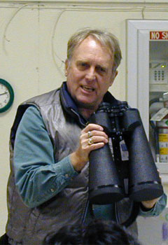
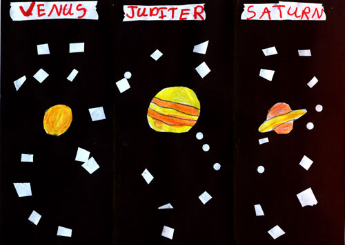

|  |
The early evening sky is full of bright planets this month, with Jupiter, Saturn, and Venus all competing for our attention. Venus rules the sky, shining at its maximum magnitude -4.6 on the first, then declining slightly throughout the month as it races in its smaller orbit to catch up with the slower earth. A bit past half phase as the month begins, Venus will wane rapidly as the apparent size of its disk swells to nearly an arc minute in size, about twice the apparent size of Jupiter. This is big enough that the crescent shape might even be visible in binoculars, especially if they're held steady on a tripod or other mount. Try it - I'd be interested in hearing how small an aperture and magnification it takes to see Venus as a crescent. It may be easier to see Venus' shape before the sky is completely dark, or with a deep violet, neutral density or polarizing filter. Experiment! You can even observe Venus during broad daylight (when it's high in the sky), but be careful to avoid accidentally looking at the sun. Safest is to set up in the shade of a building; this not only protects you from accidentally pointing at the sun, but also helps shield your eye from glare.
Venus will set earlier and earlier as it closes with the sun, and will become increasingly challenging to locate. The best approach is to try to spot it every few days, which will make it easier to remember exactly where to look. Near month's end, since its declination is somewhat north of the sun, Venus will remain visible in the sky for half an hour after sunset, but also rises before sunrise, giving observers a chance to see the same planet in both morning and evening skies. Since it's so far north of the sun, it should also be possible to watch the planet all the way through conjunction (which happens on the 30th).
Ambitious observers can also look for the famous "ashen light," lighting the unlit part of crescent Venus like earthshine on a crescent moon (but with no obvious explanation, and no definite proof that it actually exists), and for rare and elusive dark patches in Venus' thick cloud cover, the only detail one can hope to see on this planet.
Meanwhile, Jupiter continues to put on a wonderful show. This apparition has shown enormous activity in the northern equatorial band (NEB), including several large rifts which opened and began to close over the course of a few months, a large spot in the NEB which rivals the Great Red Spot in size if not in contrast, and a pinker color to the GRS itself than we've seen in many years. There's still plenty of time to get good views of Jupiter in March, and see some of these features for yourself (even watch them change over the course of the month). And the moons are always fun to watch, in any size telescope or even in binoculars. For the best views, start observing right at sunset, when Jupiter is still high in the sky. Sometimes the air is steadier right around sunset, too, for reasons I don't yet understand.
Saturn, too, has put on a good show this year; the gaps in the wide-open rings are showing well, and the banding on the planet is much easier to see than last year.
Stay up late (or rise early in the morning), and get a preview of Mars, heading toward another opposition this summer. Mars' apparent size grows to 10" (a third of Jupiter, and over half of Saturn) by month's end, and brightens to magnitude zero. The early morning observer should be able to see some details on the disk now, but they're subtle, so look carefully! The red planet stands very near its ancient rival Antares (Ares being the Latin equivalent of the Greek god Mars, Ant-Ares literally means "Rival of Mars"), but I'm afraid the poor far-away first-magnitude star doesn't stand a chance against the bright planet. The two should make a pretty sight over the next several months.
Neptune and Uranus are still too close to the sun for good observing, but Mars, in Scorpius, is joined in nearby Ophiuchus by faint Pluto, now far enough away from the sun that it might be visible again to early morning planet hunters. The Hayden Planetarium in New York may have demoted Pluto from planetary status in their new displays, but the International Astronomical Union and most planetary scientists still say that Pluto is a planet, and I'm sure most of us agree.
|  |